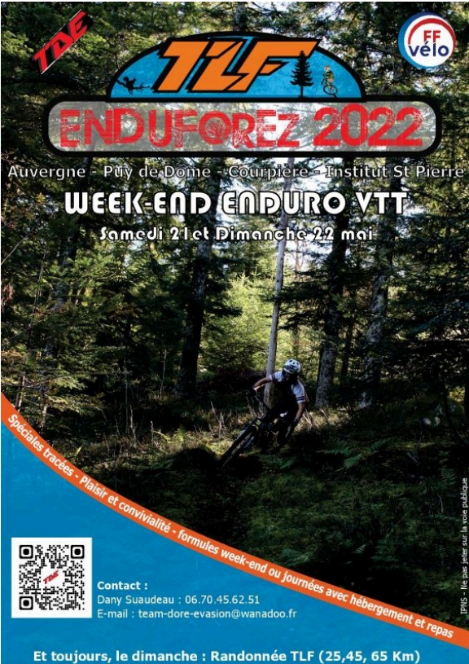

Bonjour, je m'appelle Hugo Creneau
Je suis developpeur
Je suis étudiant en première année de BUT Informatique et je m'oriente pour la suite de mes études vers l'option développement web. Je suis actuellement à la recherche d'une alternance a compter de septembre prochain en tant que développeur web.
Je vous invite à télécharger mon CV ci-dessous ou à consulter mon LinkedIn.
Mon CV Mon LinkedIn
A Propos de Moi
Je suis Hugo Creneau et je suis Developpeur
Passionné par le développement informatique depuis mon enfance, je suis actuellement étudiant en première année de BUT Informatique. Mon expertise se concentre principalement sur le développement web, où je m'épanouis dans la création de sites dynamiques et intuitifs. Avec une solide base en langages tels que HTML, CSS, JavaScript, je m'efforce constamment d'explorer de nouvelles technologies pour enrichir mes compétences. Mon objectif est de contribuer à des projets innovants tout en continuant à apprendre et à évoluer dans le domaine du développement informatique.
Date de naissance : 8 mai 2005
Age : 18
Site web : Mon site
Email : hugo.creneau@etu.uca.fr
Etudes : 1A BUT Informatique
Phone : 06.86.75.90.90
Ville : Clermont-Ferrand (63) - France
Statut : En recherche d'alternance
HTML / CSS
C++
Python
C#
Mon Parcours
2023 -2024
1ere année BUT Informatique
Le BUT Informatique me plonge dans le développement, un monde d'opportunités pour l'innovation. Durant cette année, j'ai abordé de nombreux sujets tels que le développement web avec les langages HTML, CSS ou PHP, mais également le développement applicatif en C#, C++ et XAML.
2021 - 2023
Obtention du diplome du Baccalauréat
Durant ces années au lycée Jean-Zay à Thiers(63), j'ai obtenu le diplome du Baccalauréat avec mention en étudiant les spécialités Mathématiques, Physique-Chimie et Numérique et sciences de l'informatique(NSI).
Experience professionnelle
3-4 juin 2023
Bénévolat durant l'évenement enduforez
J'ai, durant ce week-end de juin 2023, occupé le même poste que l'année précédente et j'ai mené ma mission à bien une nouvelle fois.

21-22 mai 2022
Bénévolat durant l'évenement enduforez
En mai 2022, je faisais partie des responsables de l’organisation d’un événement de VTT nommé EnduForez accueillant plus de 700 participants. J’ai donc dû participer a la gestion du logement des personnes, de leur restauration, du stockage de leurs véhicules, de l’acheminement des participants par navettes sur le lieu de départ de l’événement, ainsi que leur ravitaillement lors du parcours. Cette expérience m’a donc permis de prendre mes responsabilités lors de l’organisation d’un événement sportif accueillant de nombreuses personnes ainsi que d’apprendre à réagir vite face à des situations pouvant s’avérer problématiques telles que, lors de cet événement, des prises de retard liées aux navettes.
Compétences
Web Design
Le webdesign est l'art de concevoir des interfaces web attrayantes et fonctionnelles, alliant esthétique et utilité pour offrir une expérience utilisateur optimale. La réalisation de ce PortFolio m'a permis de m'entrainer dans ce domaine.
Web Development
Le web développement englobe la création et la maintenance de sites web, utilisant des langages de programmation comme HTML, CSS et JavaScript pour concevoir des interfaces interactives et des fonctionnalités dynamiques. Les cours de web m'ont formés à cette pratique et j'ai continué à en faire après le foin de ce module car c'est un domaine qui me passionne.
Algorithmie
L'algorithmie est l'art de résoudre des problèmes en décomposant des tâches complexes en étapes simples, utilisant des algorithmes efficaces pour trouver des solutions optimales dans divers domaines, de l'informatique à la science des données. Je me suis familiarisé avec ce domaine lors de ma formation en étudiant notament le C.
Coding
Le coding, ou codage, fait référence à l'acte d'écrire du code informatique dans des langages de programmation spécifiques, permettant de créer des applications, des sites web, des logiciels et bien plus encore. C'est une pratique qui me passionne de part la liberté que cela procure de pourvoir tout créer à partir de rien.
Développement Orienté Objet
Le développement orienté objet est une approche de programmation où les concepts du monde réel sont modélisés en objets, chacun ayant des propriétés et des comportements spécifiques. J'ai découvert à travers le C++ ce versant du développement, c'est un langage crée à partir du C que j'avais étudié précédament. Cela m'a permis de me focaliser sur le côté objet du développement plutôt que sur le langage
Développement Applicatif
Le développement applicatif avec XAML et C# consiste à créer des applications interactives pour les plateformes Windows en utilisant le langage de balisage XAML pour la conception d'interfaces utilisateur et le langage de programmation C# pour la logique applicative. Cette approche permet de développer des applications riches et performantes pour une variété de dispositifs.
Qualités
Créativité
La créativité est une qualité essentielle dans le domaine du design et du développement, permettant de générer des idées innovantes, de résoudre des problèmes de manière originale et d'apporter une touche unique à chaque projet. Elle se manifeste par la capacité à penser différemment, à explorer de nouvelles voies et à repousser les limites de la conception et de la programmation. Le développement de ce PortFolio ainsi que de mes différents projets m'ont permis d'entrainer cette qualité et de l'éxercer avec brio.
Adaptibilité
L'adaptabilité est une qualité clé qui me caractérise. Elle se manifeste par ma capacité à m'ajuster facilement aux changements, à m'adapter à de nouvelles situations et à trouver des solutions créatives face à des défis imprévus. Cette qualité me permet de rester efficace et productif dans des environnements dynamiques et en constante évolution. Je m'adapte en continu dans le développement car, pour de nombreux projets, il est necessaire de changer de langage et donc de s'adapter constament.
Rigueur
La rigueur est l'une de mes qualités fondamentales. Elle se manifeste dans mon approche méthodique du travail, ma capacité à suivre des processus avec précision et à maintenir des normes élevées de qualité dans tout ce que j'entreprends. Cela se traduit également par mon souci du détail et ma persévérance à atteindre les objectifs fixés, même dans les situations les plus exigeantes. Dans le développement, on doit absolument, pour créer un code fonctionnel créant une bonne expérience pour l'utilisateur, obtenir un code fonctionnel dans bug, il faut être rigoureux pour cela.
My Projects
My Last Projects :

Logiciel de Cryptage de Mot de Passe
Cette application de cryptage de mots de passe utilise le puissant algorithme AES pour garantir la sécurité des données. Elle offre un stockage sécurisé des mots de passe, une génération robuste de nouveaux mots de passe, une gestion centralisée pour une organisation efficace, un partage sécurisé entre utilisateurs autorisés, et une authentification à deux facteurs pour renforcer la sécurité. AES assure un niveau élevé de protection des informations sensibles, tandis que les fonctionnalités de gestion simplifient la gestion des comptes.
Voici le code source ci-dessous :
Code Source

Implémentation du jeu PacMan en JavaScript
Cette version de Pac-Man, développée en JavaScript, offre une expérience fidèle au classique tout en introduisant des fonctionnalités modernes. Le joueur contrôle Pac-Man pour collecter des points tout en évitant les fantômes. Le jeu comprend des graphismes rétro, une mécanique de jeu fluide et des niveaux progressivement plus difficiles. Les bonus spéciaux, tels que les superpac-gommes, ajoutent de l'excitation. Une interface utilisateur intuitive permet une immersion facile dans le jeu, tandis que les effets sonores nostalgiques ajoutent à l'ambiance. Avec des contrôles simples et une rejouabilité élevée, ce Pac-Man est un plaisir classique réinventé.
Voici le code source ci-dessous :
Code Source

Implémentation du jeu TicTacToe en C
Cette version en JavaScript du jeu de Morpion, aussi connu sous le nom de Tic-Tac-Toe, propose un divertissement classique avec une interface moderne. Deux joueurs s'affrontent pour remplir une grille 3x3 avec leurs symboles respectifs, souvent X et O, en alternance. Le jeu offre une mécanique simple mais stratégique, où les joueurs cherchent à aligner trois de leurs symboles horizontalement, verticalement ou en diagonale pour gagner. Une interface utilisateur intuitive permet des parties fluides, avec des indicateurs visuels pour les coups valides et le résultat du match. Avec des défis rapides et une rejouabilité instantanée, ce Morpion est un classique indémodable.
Voici le code source ci-dessous :
Code Source

Création d'un système réseau
La création d'un réseau, durant un projet universitaire sans la supervision d'un professeur, via le protocole FTP permet le partage sécurisé de fichiers, tandis que la mise en place d'un serveur Apache offre la possibilité d'héberger des sites web avec stabilité et flexibilité. En parallèle, établir une communication SSH garantit un accès distant sécurisé aux systèmes informatiques. Ces processus impliquent la configuration minutieuse des paramètres de sécurité, des autorisations d'accès et des protocoles cryptographiques pour assurer la confidentialité des données et la sécurité des connexions. En combinant ces technologies, les utilisateurs peuvent créer un environnement réseau robuste, propice au partage de données et à la gestion à distance des systèmes.

Création de base de données
La mise en place d'une base de données fictive dans PostgreSQL, dans le cadre d'une SAE non supervisée par un professeur, pour la société leader de la grande distribution, AskehCorp, implique la conception et la configuration d'une infrastructure robuste pour gérer efficacement les données commerciales. Cette base de données comprendrait des tables pour stocker les informations sur les produits, les clients, les commandes, les fournisseurs et les transactions financières. En outre, des vues et des procédures stockées pourraient être mises en place pour simplifier les rapports et les analyses. La sécurité des données serait une priorité, avec des politiques d'accès strictes et des sauvegardes régulières pour garantir l'intégrité des données. En intégrant des fonctionnalités avancées telles que la réplication et la gestion des performances, cette base de données PostgreSQL fournirait à AskehCorp les outils nécessaires pour gérer efficacement ses opérations de grande distribution.

Implémentation d'un jeu de Dames en C# XAML
L'implémentation d'un jeu de dames en C# avec XAML, dans le cas d'une SAE supervisée par des professeurs, nécessite la création d'une interface utilisateur interactive et la logique de jeu correspondante. Les éléments visuels incluraient une grille de cases représentant le plateau de jeu, avec des pions pour chaque joueur. Les fonctionnalités du jeu comprendraient la sélection et le déplacement des pions, la gestion des sauts pour capturer les pions adverses, ainsi que la promotion des pions à des dames en cas d'atteinte de la ligne adverse. En outre, des fonctionnalités telles que l'indication des mouvements légaux et la détection de fin de partie seraient intégrées pour offrir une expérience de jeu fluide et engageante.
Contactez moi
Avez-vous des questions ?
JE SUIS A VOTRE SERVICE
Appelez moi au :
06.86.75.90.90
hugo.creneau@etu.uca.fr
Lieu :
Clermont (63) - France